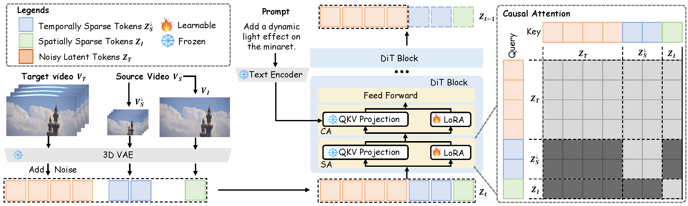

Abstract
We propose IC-Effect, an instruction-guided, DiT-based framework for few-shot video VFX editing that synthesizes complex effects (e.g., flames, particles and cartoon characters) while strictly preserving spatial and temporal consistency. Video VFX editing is highly challenging because injected effects must blend seamlessly with the background, the background must remain entirely unchanged, and effect patterns must be learned efficiently from limited paired data. However, existing video editing models fail to satisfy these requirements. IC-Effect leverages the source video as clean contextual conditions, exploiting the contextual learning capability of DiT models to achieve precise background preservation and natural effect injection. A two-stage training strategy, consisting of general editing adaptation followed by effect-specific learning via EffectLoRA, ensures strong instruction following and robust effect modeling. To further improve efficiency, we introduce spatiotemporal sparse tokenization, enabling high fidelity with substantially reduced computation. We also release a paired VFX editing dataset spanning 15 high-quality visual styles. Extensive experiments show that IC-Effect delivers high-quality, controllable, and temporally consistent VFX editing, opening new possibilities for video creation.
How Does it Work?
Given a source video VS, IC-Effect first tokenizes it into spatiotemporal sparse tokens ZS↓ and ZI. These tokens are concatenated with noisy target tokens ZT along the token dimension to form a unified sequence, which is fed into a DiT module equipped with causal attention. At the output, ZS↓ and ZI are discarded, and only the target tokens ZT are decoded by a VAE to produce the edited video. During training, we first fine-tune the model with high-rank LoRA to acquire general video editing and instruction-following capabilities, and then further fine-tune it with low-rank LoRA on a small set of paired visual effects data to accurately capture the stylistic characteristics of diverse effects.

Video VFX Editing of IC-Effect
Control of instruction
Video Multi VFX Editing
Comparison of Common Video Editing
Comparison of Video VFX Editing
BibTeX
@inproceedings{your2025paper,
title = {Your Paper Title},
author = {Author, A. and Author, B. and Author, C.},
booktitle = {Conference on Awesome Results},
year = {2025}
}